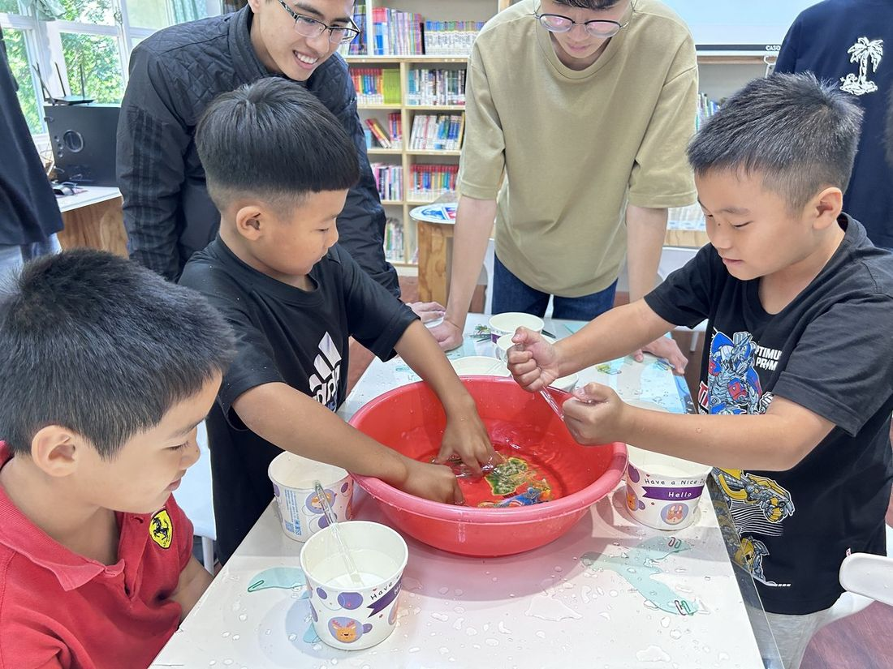

一位完整走過這條路的青年
高醫校友陳俊志醫師回到六龜深耕十餘年，
他指導的尼布恩合唱團曾獲世界合唱大賽金牌，陪伴一代六龜孩子長大。
本計畫接續這條路——聲樂社與在地學校合唱團長期合作，每年舉辦音樂營與聯合演出。
呂盈萱，正是這條路上走出來的孩子。她從尼布恩合唱團一路成長，考入高雄醫學大學，成為本計畫合作社團——聲樂社的社長。
今年寒假，她率領 55 位高醫學生回到六龜寶來國中，為 43 位國中生舉辦音樂營，用自己的求學經歷告訴學弟妹：偏鄉的孩子，也能勇敢築夢。
「偏鄉的孩子，—— 呂盈萱．高醫聲樂社社長（中央社訊息平台，2026 年 1 月）
其實很少有做夢的機會。」
受助者成長為服務者，並回到家鄉帶領下一代。
而在這條路的起點，一位三年級學童在假日學堂回饋單寫下：
「很開心，因為有大哥哥大姐姐陪我。」
起點與終點，是同一件事。
